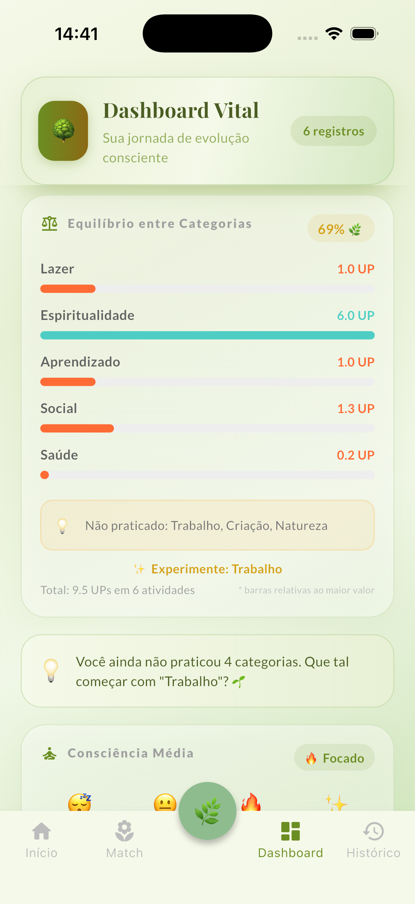
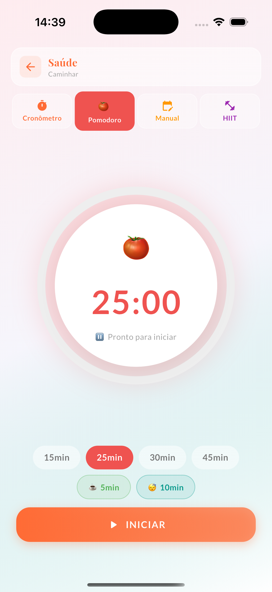

Meça a vida certa, não as tarefas
Você tem seis apps de hábito e mais ansiedade. O RootFlow troca o vício de streaks por uma métrica honesta — o UP, minutos praticados ÷ tempo ideal — e te mostra o equilíbrio real entre Mente, Corpo e Espírito.

A armadilha do streak
Habit trackers premiam a sequência, não a vida. Você marca o check, mantém o streak por medo de quebrá-lo, e mede o que é fácil contar — não o que importa. O resultado é mais culpa, menos clareza.
Uma régua diferente
Para quem pensa em sistemas
Não "quantos dias seguidos?", mas "minha energia está bem distribuída?". Tudo calculado em tempo real, nada que vire mais um número para você obsedar.
UP, balança de energia, distribuição por órgão, índice de desafio e tendência por período. Hoje, semana, mês — num olhar.
O foco que você já pratica, agora alimentando o seu equilíbrio automaticamente. Sem trocar de app.
Export em JSON a qualquer momento. Leve para sua planilha, seu Notion, sua análise. Os dados são seus de verdade.
O sistema
Um toque abre a ação, dois iniciam o timer. Crono, Pomodoro ou tempo manual. Cabe na rotina que você já tem.
O UP e o equilíbrio aparecem na hora. Você para de adivinhar e passa a enxergar onde a vida está pendendo.
O Smart Match analisa 7 dias e sugere o contrapeso. Otimização de verdade: na área que precisa, não na que é fácil.

"Larguei três habit trackers. O UP me mostrou que eu não tinha problema de disciplina — tinha problema de equilíbrio."
Local por princípio
Tudo roda offline, no seu aparelho. O RootFlow não tem servidor para vazar nem login para esquecer. Você é dono dos dados e os leva embora quando quiser, num arquivo só seu.
Comece hoje
Pagamento único de R$ 28. Sem assinatura, sem conta. Troque a ansiedade do streak pela clareza de um equilíbrio que você finalmente consegue ver.